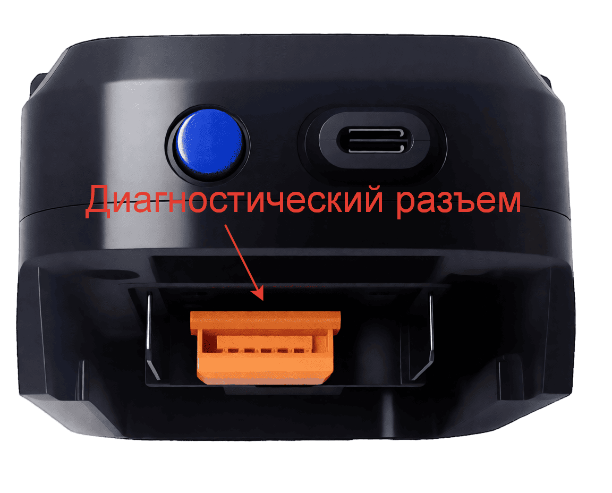
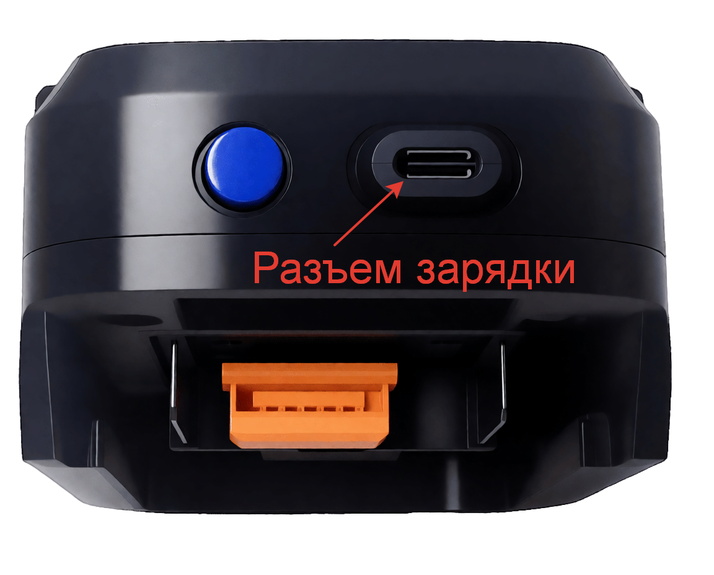
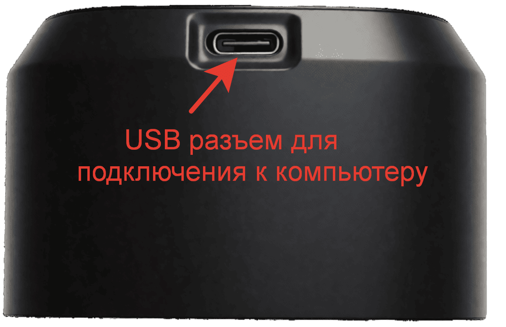

Диагностический модуль аккумуляторов Makita LXT
Основные элементы устройства

🔌 Разъём Makita
Подключите аккумулятор Makita LXT. Совместимость с большинством моделей. Надежный контакт до щелчка.

🔘 Кнопка включения
Удерживайте 2 секунды для запуска. Светодиодный индикатор показывает статус питания.

🔌 USB-разъём зарядки
Для питания от внешнего источника: Power Bank, адаптер. Работа без аккумулятора.

💻 Диагностический USB
Для подключения к ПК. Передача отчётов и логов диагностики. Поддержка ПО.
Как использовать модуль
- Убедитесь, что аккумулятор чистый и сухой.
- Подключите аккумулятор к разъёму Makita.
- Нажмите и удерживайте кнопку включения до появления индикации.
- Дождитесь окончания автоматической диагностики.
- Подключите диагностический USB-порт к компьютеру.
- Запустите программное обеспечение и сохраните результаты.
Совет: Регулярно обновляйте программное обеспечение для получения наиболее точных данных
диагностики.